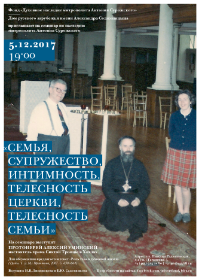

Diana Winsor
FROM RUSSIA WITH LOVE…
April, 19. 1981
Diana Winsor has been a journalist since the 1960s, writing for several newspapers and magazines, including the Sunday Times and the Daily Telegraph, both as a staff writer and a freelance. She is the author of several books. She has also written many short stories and contributed to several books on Britain.
Metropolitan Anthony is "a Christian leader respected far beyond his own congregation", says the Archbishop of Canterbury. How has this Russian Orthodox patriarch affected the lives of his adherents here? You expect magnificence, incense, embroidered robes, gilded icons. At the very least an acolyte or two to open the door of the Russian Orthodox Patriarchal Cathedral on behalf of its present incumbent, Metropolitan Anthony of Sourozh. The Cathedral itself looks like some faded relic of Byzantium, a piece of 19th century baroque tucked discreetly into a Knightsbridge backwater between Hyde Park and a cluster of Middle Eastern embassies. It was originally built for Anglican worship. It is now entirely Russian, leased to the Orthodox church after the last war and recently sold after a massive fund-raising effort by the Russian Orthodox community. If you have been brought up in the traditions of the Church of England, the Russian Orthodox Church sounds faintly outlandish, a foreign branch of Christianity encrusted with onion domes and the gaudy ornament of ancient and outdated ritual. Certainly, in terms of sartorial glory at least, its archbishops look a cut above our own. And few Archbishops of Canterbury have made more visual or spiritual impression on the people of Britain over the past 30 years than this grey-bearded, mellifluous Russian who had never before visited England, and knew no English, when at the age of 35 he was appointed as a recently ordained priest of some 300 Russian emigrйs in London. The present Archbishop of Canterbury, Dr Robert Runcie, believes that Metropolitan Anthony's influence goes far beyond his own Church. "People who live in this country — Christians, doubters and unbelievers — owe an immense spiritual debt to Metropolitan Anthony", he says. "He represents the great Orthodox tradition, and particularly its Russian faith. "These are days when Christians in the West are tempted to be mentally restless, and eager to express their social relevance. The Russian Church has a steady sense of the eternal truth that cannot be shaken. Its liturgy does not put before us ideas. It puts us in touch with God. Especially in his broadcasts, Metropolitan Anthony communicates the Christian faith with a directness which inspires the believer and challenges the enquirer. "As well as being a personal friend of successive Archbishops of Canterbury, he has worked untiringly for closer understanding between Christians of the East and West, and brought the writings of the Orthodox mystics, particularly those of Holy Russia, to readers in this country. "Metropolitan Anthony is a Christian leader respected far beyond his own congregation". Today Metropolitan Anthony's lucid English prose in books like Living Prayer and Meditations on a Theme has reached thousands. He is the best-selling spiritual author in Britain and his books have been translated into ten languages. The measured cadences of his speech, his simple but profound convictions, have made him a natural broadcaster. That original exiled community of Russians has grown into a parish of some 1,000 people in Greater London alone, with another eight parishes which include Bristol, Devon, Sussex and Norfolk. In one of them the parish priest estimates that half his parishioners are English converts to Russian Orthodoxy-including himself and his wife. The differences between the western churches and the Orthodox of the eastern Roman Empire go back a long way. By the sixth century, the religion of Christianity recognised by the Emperor Constantine two centuries earlier was polarising already on the crumbled and disparate western Empire and the wealthy, more stable civilisation based on Constantinople. The power of the Pope in Rome was increasing, and relations between the Pope and the Patriarchs in Constantinople came to a hasty, acrimonious and formal end when the Papal envoys and Patriarchs parted company in Constantinople in 1054.